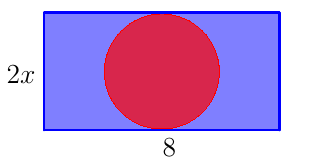

Exercices sur les calculs algébriques - Pour comprendre
Racines carrées
Enoncé 
- On considère trois points $A$, $B$ et $C$ du plan tels que $AB=2\sqrt{45}$, $BC=6\sqrt 5$, $AC=3\sqrt{20}$. Quelle est la nature du triangle $ABC$?
- On considère trois points $E$, $F$ et $G$ du plan tels que $EF=2\sqrt 7+3$, $FG=3\sqrt 7-2$, $EG=2\sqrt{26}$. Quelle est la nature du triangle $EFG$?

Exercice 2 - Passage à l'inverse et racine carrée ♡ [Signaler une erreur] [Ajouter à ma feuille d'exos]
Enoncé
Écrire les nombres suivants sous la forme $a\sqrt b$ avec $a$ un nombre rationnel et $b$ un entier, le plus petit possible.
$$\mathbf{1.}\ \frac{1}{\sqrt 3}\quad\mathbf 2.\ \frac{4\sqrt 2}{\sqrt 7}\quad\ \mathbf 3.\ \frac{5\sqrt 6}{\sqrt{33}}.$$
Enoncé
Écrire sous la forme $a\sqrt b$, avec $a$ et $b$ entier et $b$ le plus petit possible, les nombres suivants :
$$\mathbf{1.}\quad 2\sqrt 7-4\sqrt 7+8\sqrt 7\quad\quad\mathbf{2.}\quad 9\sqrt{45}-10\sqrt{80}.$$
Enoncé
Démontrer que $\displaystyle (1+2\sqrt 3)=\sqrt{13+4\sqrt 3}$.
Puissances
Enoncé
Simplifier les écritures suivantes, lorsque c'est possible :
\begin{array}{lll}
\displaystyle\mathbf{1.}\ \frac{(x^3)^4}{x^{12}}&\displaystyle\quad\mathbf{2.}\ a^2 b a^3b^2&
\displaystyle\quad\mathbf{3.}\ \frac{a^2b^3}{a^3b}\\
\displaystyle\mathbf{4.}\ (a^{-2}b^3)^2&\displaystyle\quad\mathbf{5.}\ \frac{a^2+ab}{a^3}&
\displaystyle\quad\mathbf{6.}\ \frac{a^2+b^2}{ab}\\
\end{array}
Identités remarquables - Factorisation
Enoncé
- Avec l'aide de votre calculatrice, calculer $14^2-13^2-12^2+11^2$, puis $57^2-56^2-55^2+54^2$. Quelle conjecture pouvez-vous faire?
- Prouver cette conjecture.
Enoncé
Factoriser les expressions suivantes :
\begin{array}{lll}
\mathbf{1.}\ 9(x+4)-(x+4)^2&\quad\mathbf{2.}\ (x-8)^2-144&\quad\mathbf{3.}\ (14x-37)^2-3(14x-37)\\
\mathbf{4.}\ (9x-4)^2-121&\quad\mathbf{5.}\ (5x-6)^2-5x+6
\end{array}
Équations
Enoncé
Résoudre les équations suivantes :
- $(2x-1)(4x+4)+(-4x+2)(x+3)=0$.
- $5x(3x+2)=(3x+2)^2$.
Enoncé
- Résoudre $x^3-x=0$.
- Pour quelles valeurs de $x$ le quotient $\frac{x^3-x}{x-1}$ est-il défini?
- Résoudre $\frac{x^3-x}{x-1}=0$.
Enoncé
Résoudre les équations suivantes :
\begin{array}{ll}
\displaystyle \mathbf{1.}\ \frac{x^2-100}{x+4}=0&\displaystyle \quad\mathbf{2.}\ \frac{2x+1}{x+1}=6.
\end{array}
Enoncé

Sur la figure ci-dessus, $x$ désigne un nombre strictement positif et les dimensions du rectangle sont $2x$ et $8$.
Le disque et le rectangle ont le même centre et le cercle est tangent à deux côtés opposés du rectangle.
Déterminer la valeur exacte de $x$ pour laquelle le disque et la partie bleue ont la même aire.Enoncé
On soustrait un même nombre au numérateur et au dénominateur de la fraction $\dfrac{23}{38}$. On obtient alors l'inverse de la fraction $\dfrac{23}{38}$.
Quel est ce nombre?
Calcul littéral
Enoncé
Démontrer que, si $x\neq 2$, alors
$$\frac{x^2-x-3}{x-2}=x+1-\frac{1}{x-2}.$$
Enoncé
Dans les expressions suivantes, le réel $x$ est choisi de sorte que les dénominateurs ne s'annulent pas. Écrire les expressions comme une seule fraction.
\begin{array}{lll}
\mathbf{1.}\ \frac{x}4+\frac4x&\quad\mathbf{2.}\ 2+\frac{3}{x+1}&\quad\mathbf{3.}\
\frac{x+7}{x+1}-\frac{x+3}{x+4}.
\end{array}
Pour compléter...
Calculs algébriques : racines, puissances, identités remarquables, équations